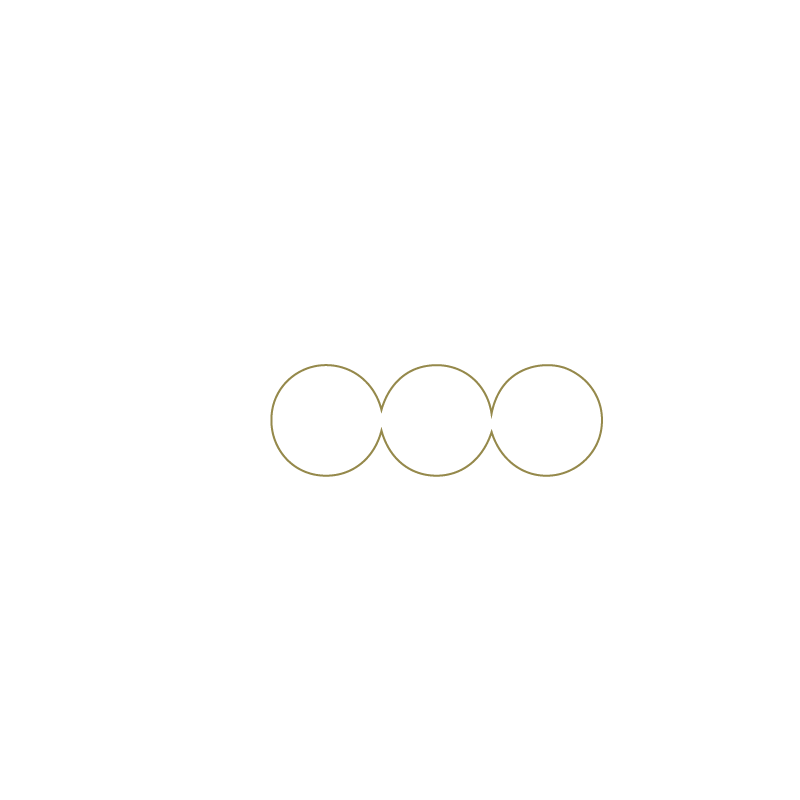
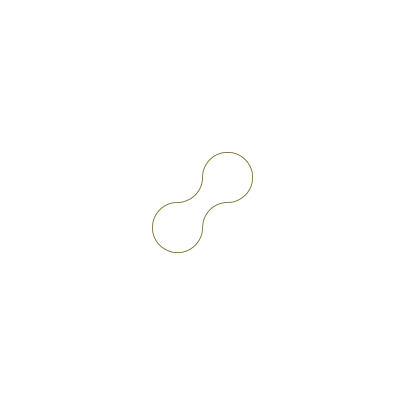
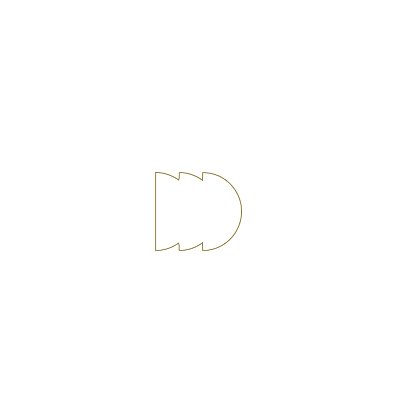
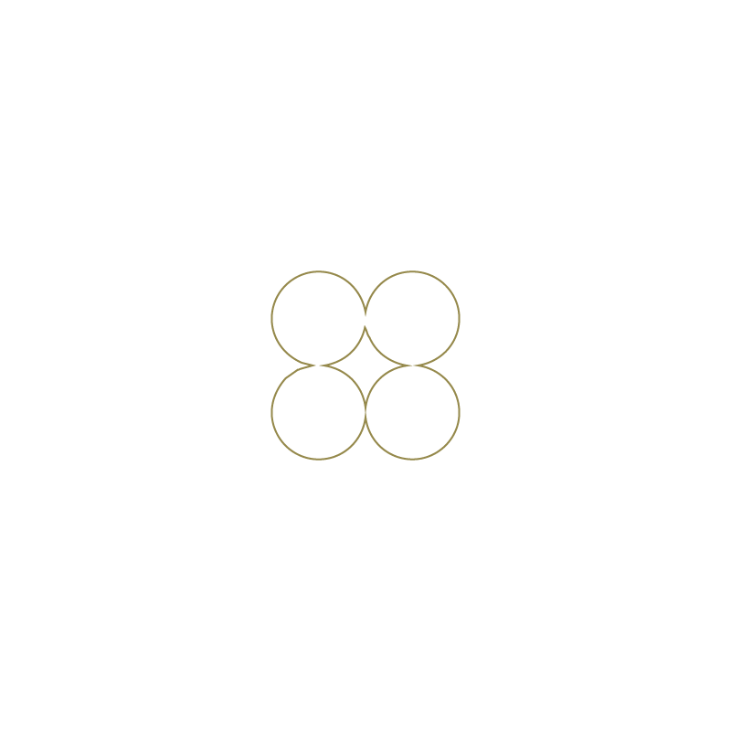
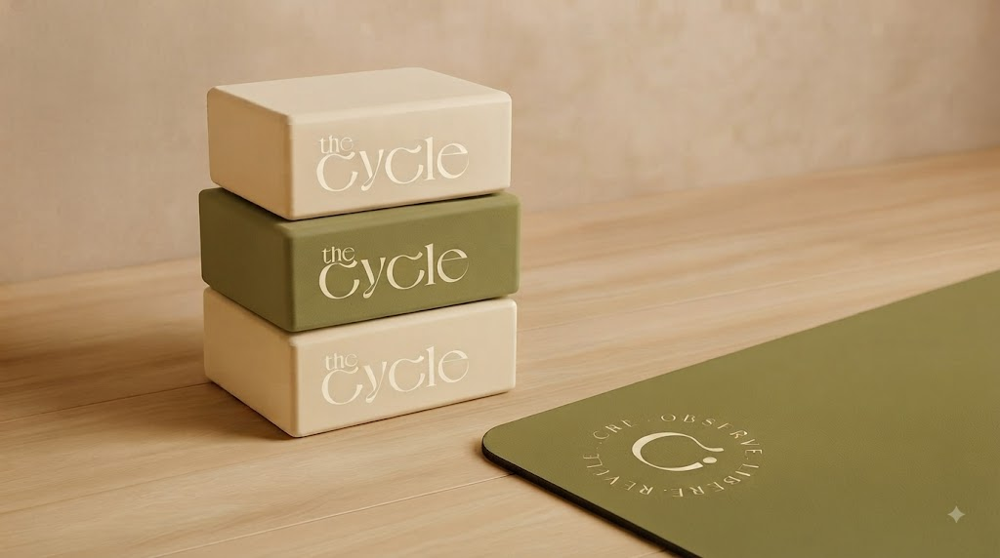
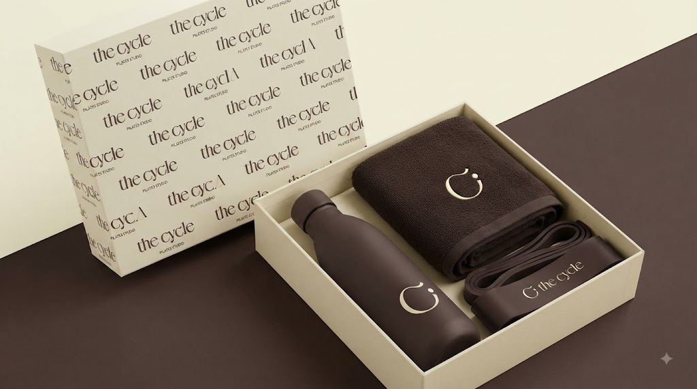
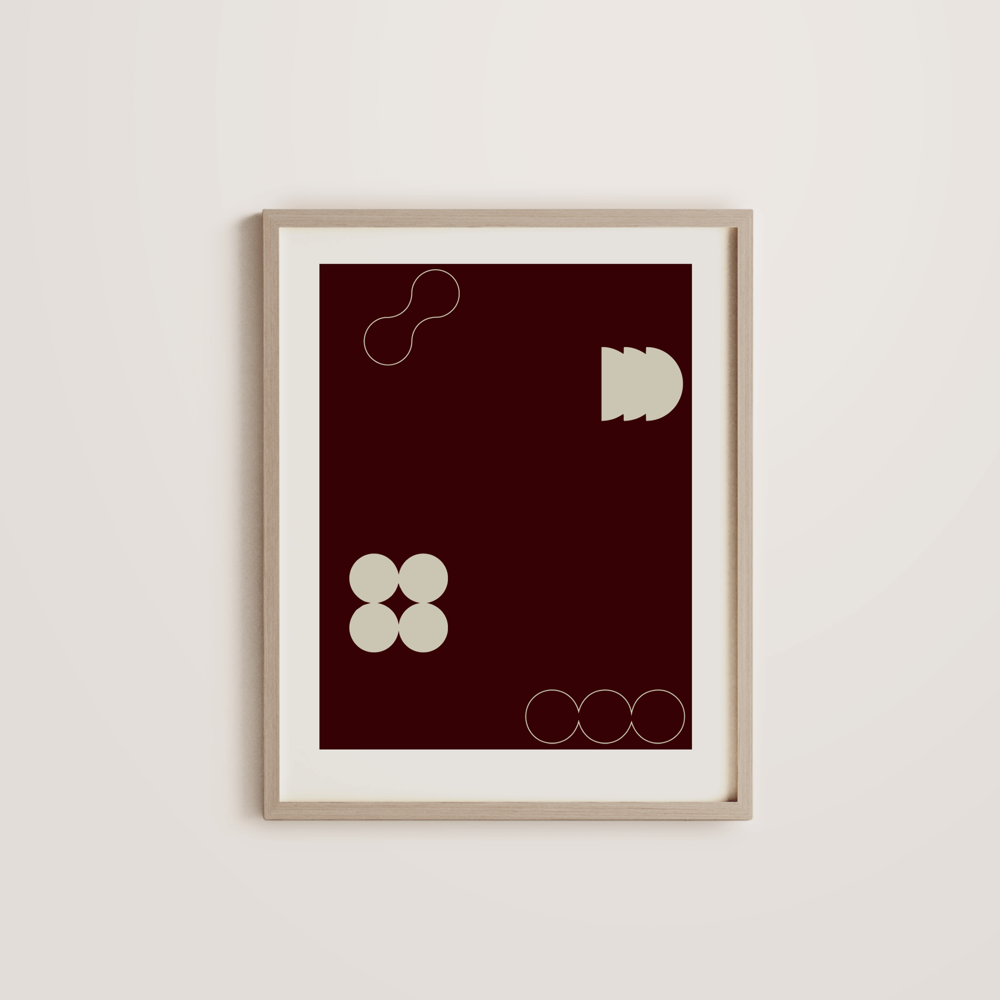

01 / O

Observar
Perceber com clareza o que está acontecendo.
O que está acontecendo agora?
Cycle Club · wellness & desenvolvimento pessoal
Precisa encontrar a próxima forma possível de continuar.
Um método, uma comunidade e ferramentas práticas para sair do piloto automático e construir uma relação mais consciente com sua saúde, alimentação, emoções e rotina.
Datas, valores e condições de lançamento serão divulgados em breve.


Você se move.
Você pausa.
Você retorna.
Mas nunca volta igual. Cada volta carrega o que foi vivido, aprendido e transformado. O The Cycle não ensina você a perseguir uma constância perfeita. Ensina a perceber onde está e a criar o próximo passo possível.
“ Você nunca
recomeça do zero.
Método The Cycle
Antes de agir, o método convida você a perceber o que está acontecendo, compreender o que conduz a situação, reconhecer o que já não precisa continuar sendo carregado e escolher o que deseja construir a partir dali.

Perceber com clareza o que está acontecendo.
O que está acontecendo agora?
Compreender o que pode estar conduzindo a situação.
O que existe por trás deste padrão?
Reconhecer o que já não precisa continuar sendo alimentado.
O que não preciso mais carregar?
Escolher conscientemente o que deseja construir agora.
Qual é o menor passo possível?O método em movimento
“Perdi o treino e sinto que estraguei tudo.”
Talvez uma expectativa de perfeição esteja conduzindo essa reação.
Um dia fora do plano não apaga o caminho que já foi percorrido.
Retomar no próximo momento possível, sem punição e sem compensação.
Clareza sem ação vira apenas pensamento. O método termina sempre em um próximo passo possível.
Cycle Club
Os vídeos orientam. As ferramentas ajudam a praticar. Gui e Ana conduzem a jornada. A comunidade mantém o método vivo no cotidiano.
Você começa pelo Cycle Check-in e recebe um Mapa do Ciclo Atual com foco inicial, pergunta de retorno e primeiro passo possível.
Guias, Diário ORLC e Planner transformam a linguagem do método em decisões aplicáveis à saúde, alimentação, rotina e emoções.
Encontros, direcionamentos e espaços de comunidade ajudam você a atravessar pausas, ajustar a rota e seguir no seu ritmo.
Sua jornada por dentro
Cada entrega ocupa um lugar claro. A experiência é leve o suficiente para ser vivida — não apenas admirada.
Cycle Check-in
Mapa do Ciclo Atual
Guia Essencial
ORLC, comunidade e encontros
Retorno, Planner e acompanhamento
Ferramentas que viram prática
Os materiais do The Cycle não existem para acumular páginas. Cada um responde a uma pergunta da jornada e ajuda a transformar percepção em movimento.



 Gui + Ana
Gui + Ana
Condução com presença
Gui e Ana conduzem o Cycle Club como mentores da comunidade. Eles apresentam temas, orientam a aplicação do método e criam espaços para transformar situações reais em escolhas mais conscientes.
A experiência tem finalidade educacional e acontece de forma coletiva. Ela não substitui atendimento médico, nutricional ou psicológico individual.
Três profundidades de jornada
Todo plano começa com escuta, direção e pertencimento. O que muda é a profundidade da prática e o nível de sustentação ao longo do caminho.
01 mês
Entender o próprio ciclo e iniciar com clareza.
03 meses
Aplicar o método em situações reais e retornar com mais consciência.
Tudo do Essential, mais:
06 meses
Transformar clareza em prática contínua com acompanhamento mais próximo.
Tudo do Plus, mais:
Essential orienta. Plus aprofunda. Premium acompanha, sustenta e transforma a experiência em prática contínua.
Quero ajuda para escolherAntes de entrar
Não. Os conteúdos apresentam a linguagem do método, mas o Cycle Club é uma jornada estruturada que combina direção, ferramentas práticas, encontros e comunidade. A proposta é ajudar você a aplicar o método na vida real.
Não. A jornada começa exatamente de onde você está. O Cycle Check-in ajuda a localizar seu momento atual e o Mapa do Ciclo Atual transforma essa escuta em um foco inicial e um primeiro passo possível.
Isso também faz parte do processo. O Método The Cycle não exige constância perfeita. Ele ensina você a reconhecer uma interrupção, compreender o que aconteceu e encontrar uma forma possível de retornar sem culpa ou compensação.
Eles conduzem a comunidade como mentores, apresentam temas, orientam a aplicação do método e facilitam os encontros coletivos. No Premium, a jornada inclui acompanhamento online mais próximo e experiências exclusivas.
Todos começam com escuta, direção e linguagem comum. O Essential cria uma base em um mês; o Plus oferece três meses de prática e ferramentas de aprofundamento; o Premium acompanha seis meses com Planner, maior proximidade, Box e Cycle Experience.
As datas, os valores e as condições de lançamento serão divulgados em breve. Ao entrar na lista de interesse, você poderá receber essas informações primeiro e conversar com a equipe sobre o plano mais coerente com o seu momento.
O próximo ciclo começa com uma escolha
Entre na lista de interesse para receber primeiro as datas, os valores e as condições do próximo ciclo do The Cycle Club.